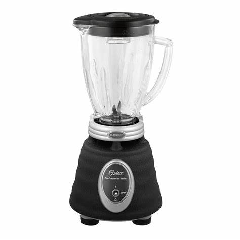
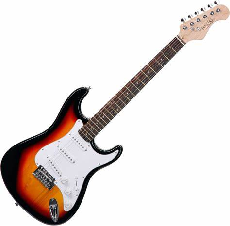

Los 20 artefactos tecnologicos más utilizados por el hombre
Los artefactos tecnológicos son los dispositivos concebidos y creados por el hombre de manera deliberada para solventar necesidades o facilitar ciertas tareas, empleando para su construcción y funcionamiento las virtudes de la técnica y la ciencia. Por ejemplo: rueda, licuadora, GPS.
Los artefactos tecnológicos suelen ser objetos materiales desplazables, avocados al cumplimiento de una función puntual, que por lo general busca ampliar los límites materiales del cuerpo humano.
La rueda:
Aunque no lo parezca, la rueda es uno de los primerísimos artefactos tecnológicos de la historia de la humanidad. Su invención se pierde en la memoria de los tiempos, pero es vital para el surgimiento de tecnologías posteriores y para el desarrollo de las primeras máquinas humanas, precursores de la tecnología actual.
El libro:
Otro invento insospechadamente tecnológico, por lo acostumbrados que estamos a él y lo antiguo de sus diseños iniciales, el libro es el soporte textual por excelencia y es imposible producirlo sin una maquinaria técnica especializada, imprenta.
La licuadora:
Inicialmente bautizada como vibradora por sus inventores norteamericanos, es uno de los electrodomésticos más usuales en la cocina contemporánea, permitiendo la creación de mixturas más o menos uniformes de diversos alimentos y sustancias.

El televisor:
Uno de los grandes artefactos del siglo XX, cuyo impacto en la vida humana revolucionó la manera en que entendíamos la comunicación y la información. Se trata de un artefacto de recepción y reproducción de señales audiovisuales, parte final de todo un sistema de captación de imágenes cuyos orígenes se remontan al del cine y la fotografía.
Horno microondas:
Otro electrodoméstico de uso popular en nuestros tiempos, opera sobre los alimentos a partir de la generación de ondas electromagnéticas de unos 2,45GHz de frecuencia, la suficiente para calentar e incluso cocinar.
Secador de cabello:
Si bien los primeros secadores eran fijos y aparatosos, el secador portátil que hoy todos tenemos se remonta a las primeras décadas del siglo XX. Su funcionamiento ha mejorado desde entonces, pero sigue siendo uno de los aparatos de mayor consumo eléctrico de una casa contemporánea cualquiera.
Calefactor:
Si bien uno de los primeros usos de la electricidad fue la generación luz, con ella vino la generación de calor. Las diversas posibilidades de estufa eléctrica o calentadores de agua que operan en base al principio de las resistencias eléctricas son prueba de ello.
Guitarra eléctrica:
Inventada en 1931, se trata del primer instrumento musical que emplea el principio de la inducción magnética para emitir sonidos, en este caso, a partir de la vibración de un conjunto de cuerdas de metal

Cámara fotográfica:
El origen de la cámara fotográfica se remonta a finales del siglo XIX, cuando la empresa de capturar técnicamente la imagen empezó a ser un sueño alcanzable. La cámara contemporánea es fruto de la evolución tecnológica de óptica moderna, química y computarización.

Control remoto:
Los mandos a distancia son artefactos tecnológicos de uso común en diversas industrias hoy en día, como la automotriz, la televisión y otros electrodomésticos, e incluso la industria del juguete. Es hecho posible gracias a la manipulación electrónica del infrarrojo y las señales de radio.
Videocámara
El paso lógico después de la cámara fotográfica y el invento de la televisión y el cine. Capturar imágenes en movimientos, convertirlas en señales electrónicas y almacenarlas en un dispositivo portátil es hoy en día tan usual, que ni siquiera reparamos en la maravilla que entraña semejante posibilidad, impensable penas hace un siglo.
Computadoras:
La gran revolución tecnológica de finales del siglo XX habría sido imposible sin las computadoras modernas, aparatos formidables comparados con las calculadoras y sistemas de tarjetas perforadas que fueron alguna vez. En tanto herramienta multifacética y veloz, y sistema de gestión de datos, revolucionó para siempre el trabajo y las relaciones sociales humanas, engendrando toda una gama de artefactos “inteligentes”.
Teléfono móvil:
Este dispositivo inalámbrico electrónico, capaz de conectarse a una red de telefonía y transmisión de datos, permite hoy en día múltiples funciones adicionales y se ha convertido en un implemento indispensable en la vida contemporánea. Se estima que hay hoy en día la misma cantidad de celulares activos que de personas en el mundo.
Memoria de almacenamiento secundario:
Disquetes, casetes, Discos compactos (CD) o DVD, y ahora memorias extraíbles (pendrive), los soportes de almacenamiento secundario portátiles son artefactos indispensables en el mundo hipercomputarizado de hoy, pues permiten llevar consigo físicamente todo tipo de información digital.
GPS:
El Global Positioning System constituye una forma segura y rápida de ubicación satelital en cualquier parte de la tierra, con un rango de precisión variable. Sus orígenes militares (el Departamento de Defensa de los EE.UU) no impidieron su comercialización y aplicación a otros tipos de aparato tecnológico, como automóviles o teléfonos inteligentes.
Reloj inteligente:
La evolución del reloj de pulsera electrónico, a su vez versión contemporánea del reloj clásico de pulsera. Estos relojes exceden la mera funcionalidad de registro electrónico del tiempo (lo cual ya es bastante decir), incorporando muchas opciones “inteligentes” de la computación.

Lector de libros electrónicos:
Una versión moderna del libro, con capacidad para albergar un número elevado de documentos, libros e incluso imágenes fotográficas, todo apuntando a un modelo de lectura tradicional, pero incorporado al aprovechamiento del almacenaje digital.
Reproductores musicales:
Marchando al ritmo de la computarización y los soportes secundarios, los reproductores portátiles de música son un accesorio común y popular, desde que se hicieron minúsculos y cómodos, a punto de llevarse en un bolsillo.
Armas de fuego:
Desgraciadamente, la necesidad de hacer daño también ha anidado en la tecnología. Constantemente surgen nuevas formas de armas automáticas e incluso computarizadas, empleadas en guerras y otras formas de violencia.
Linternas y lámparas portátiles:
La luz, esa gran necesidad humana, ha sido domesticada gracias a la ciencia y la técnica. Disponemos de aparatos diminutos capaces de iluminar un cuarto entero, o de enfocar su luz en un haz determinado como señalador.